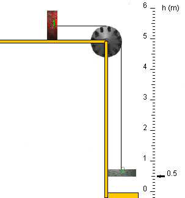

The apparatus shown above is known as Fletcher's Trolley. The apparatus is assumed to be without dissipative friction, and it is assumed that the string connecting the two blocks cannot stretch. The pulley and the string are assumed to be massless. The masses of the blocks are m1 = 0.60 kg and m2 = 0.40 kg. For the magnitude of the acceleration due to gravity, take the value g = 9.8 m/s2.
The blocks are released from rest when block 2 is at elevation h = 3.0 m. The snapshot above is taken at a later instant when block 2 is at h = 0.5 m while moving downward.
Use conservation of mechanical energy to find the speed of block 1 at h = 0.5 m. Submit your answer below in m/s.